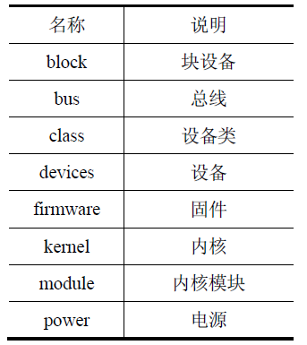
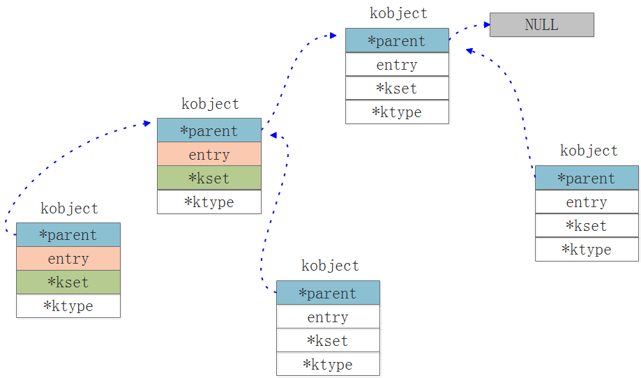
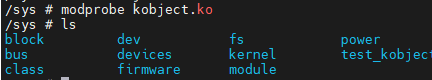
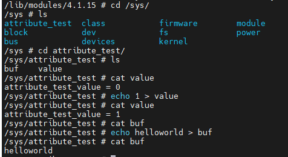
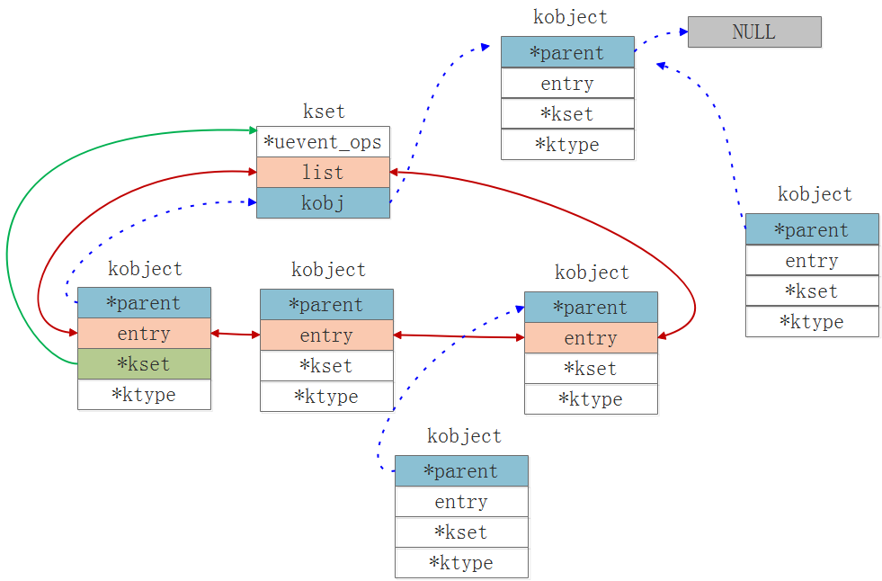
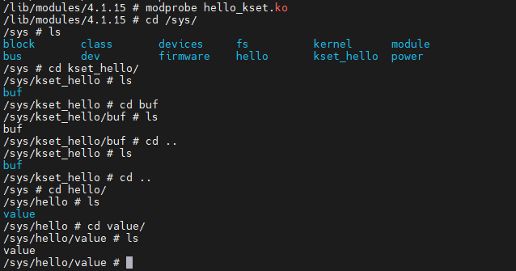

kernel-sysfs文件系统介绍
sysfs文件系统

定义：sysfs是一个基于内存的虚拟文件系统（Virtual Filesystem）。它被挂载在 /sys 目录下，是Linux内核中内核对象（kobject）、属性（attribute）和关系（relationship） 的直观体现。
核心作用：sysfs的主要作用是在用户空间（Userspace） 和内核空间（Kernelspace） 之间搭建一座桥梁，提供一个标准化的接口，使得用户空间的程序能够安全、方便地查看和配置内核的运行参数、硬件设备信息、驱动程序状态、电源管理选项等。
具体作用包括：
- 展示设备层次结构：以目录树的形式清晰地展示系统中总线（bus）、设备（device）、驱动（driver）、类（class）等内核对象的层次关系。
- 导出对象属性：将内核对象的属性（通常是变量或状态）以普通文件的形式暴露出来。用户可以通过
cat命令读取属性，通过echo命令修改属性（如果该属性可写）。 - 支持用户空间事件：通过
poll或select系统调用，用户空间程序可以监听内核发出的事件通知（例如，设备的插拔）。
特点：
- 层次化结构：sysfs是一个树形结构，目录和文件组织严密，反映了内核内部对象的父子、兄弟关系。
- 统一设备模型（Udm）的表示：它是Linux统一设备模型的外在表现。内核中的
kobject,kset,kobj_type等结构体，在sysfs中都有对应的目录和文件。 - “一个值一个文件”原则：一个属性文件通常只包含一个简单值。这简化了用户空间和内核空间的交互逻辑。
- 原子操作：对sysfs文件的读写操作通常是原子的（一次读或写操作完成一个完整的事务）。
- 符号链接广泛使用：大量使用符号链接来表示对象间复杂的关系，例如，
/sys/class/net/eth0通常会链接到/sys/devices/pci0000:00/0000:00:1c.4/0000:03:00.0/net/eth0，这表示“网络类”中的eth0设备实际上是一个PCI设备。 - 只读与可写文件：很多文件是只读的（用于展示信息），也有一些文件是可写的（用于配置）。文件权限反映了这一特性。
struct kobject
kobject是Linux内核设备管理机制的最高层抽象。kobject类似面向对象体系中的基类，它往往被嵌入到其他结构体中，形成一个复杂的多层次结构。kobject本身对应着sysfs文件系统中的一个目录。
- 提供基础的对象管理能力：主要是引用计数（reference counting）。通过
kref机制，内核可以跟踪有多少地方正在使用这个对象，从而在引用计数降为0时安全地释放它，防止use-after-free错误。 - 在sysfs中表示自己：每个
kobject在sysfs文件系统中都对应一个目录。这个目录的创建、位置和删除都由kobject管理。 - 构建层次结构：通过指定
parent，kobject可以构建起一个层次化的树状结构（类似于文件系统的目录树），这直观地反映了内核内部对象的父子关系（例如，一个USB设备属于一个USB控制器）。 - 关联与用户空间的交互：
kobject与一个kobj_type结构体关联，该结构体定义了它的属性（在sysfs中表现为文件）和行为（如show/store方法）。
1 | struct kobject { |
| 变量名 | 类型 | 意义 |
|---|---|---|
name |
const char * |
对象名称，在 sysfs 中显示为目录名。必须设置（通常通过kobject_set_name），是用户可见的标识。若未设置，sysfs 中目录名为空，导致功能异常。 |
parent |
struct kobject * |
父 kobject 指针，定义 sysfs 层次结构。例如，设备的 kobject 的parent指向其总线的 kobject。决定对象在/sys中的位置（如/sys/bus/...）。 |
kset |
struct kset * |
所属 kset 集合指针。kset 是 kobject 的容器（类似目录），用于分组管理（如所有 block 设备）。若 kobject 属于某个集合（如block_kset），必须设置此字段。 |
ktype |
struct kobj_type * |
对象类型指针，定义关键行为： -release()：对象释放时的回调函数（必须实现，否则内存泄漏）。 -sysfs_ops：sysfs 读写操作（如show/store）。 -default_attrs：默认属性列表。这是 sysfs 属性管理的核心。 |
sd |
struct kernfs_node * |
sysfs 目录项指针（旧版内核中为struct sysfs_dirent *）。内核内部使用，指向 sysfs 中的实际目录节点。通常无需手动操作，但调试时可用于检查 sysfs 状态。 |
kref |
struct kref |
引用计数，通过kref实现自动内存管理。调用kobject_get()增加计数，kobject_put()减少计数；计数为 0 时触发ktype->release()。避免手动释放内存的关键。 |
state_initialized |
unsigned int(bitfield) |
标记对象是否已初始化。由kobject_init()设置，通常无需开发者干预。 |
state_in_sysfs |
unsigned int(bitfield) |
标记对象是否已添加到 sysfs。由kobject_add()设置，用于状态检查。 |
state_add_uevent_sent state_remove_uevent_sent |
unsigned int(bitfield) |
标记 uevent 事件是否已发送。用于事件去重，开发者一般无需直接操作。 |
uevent_suppress |
unsigned int(bitfield) |
若置位，禁止发送 uevent 事件。用于优化性能（如批量操作时），但需谨慎使用。 |
entry |
struct list_head |
链表节点，用于在kset的链表中链接 kobject。内核内部使用，开发者无需操作。 |
API函数
| 函数原型 | 作用描述 | 参数说明 | 返回值及注意事项 |
|---|---|---|---|
struct kobject *kobject_create(void); |
分配并初始化一个 kobject | 无参数 | 成功返回指向新 kobject 的指针，失败返回 NULL（必须检查）。只做了最基本初始化，需要后续调用 kobject_add() |
int kobject_add(struct kobject *kobj, struct kobject *parent, const char *fmt, ...); |
将已初始化的 kobject 注册到内核并添加到 sysfs | kobj: 要添加的 kobject parent: 父 kobject 指针（可为 NULL） fmt: 生成名称的格式字符串（类似 printf） ...: 格式字符串的参数 |
成功返回 0，失败返回错误码。必须在 kobject_init() 或 kobject_create() 后调用 |
struct kobject *kobject_create_and_add(const char *name, struct kobject *parent); |
分配、初始化并添加一个 kobject 到 sysfs | name: kobject 的名称（sysfs 中的目录名） parent: 父 kobject 指针（可为 NULL） |
成功返回 kobject 指针，失败返回 NULL。是 kobject_create() + kobject_add() 的便捷组合 |
void kobject_init(struct kobject *kobj, const struct kobj_type *ktype); |
初始化一个已分配的 kobject | kobj: 要初始化的 kobject 指针 ktype: 该 kobject 的类型结构体 |
无返回值。设置引用计数为 1，关联 ktype，标记为已初始化 |
int kobject_init_and_add(struct kobject *kobj, const struct kobj_type *ktype, struct kobject *parent, const char *fmt, ...); |
初始化并添加 kobject 到 sysfs | kobj: 要初始化的 kobject ktype: kobject 类型 parent: 父 kobject fmt: 名称格式字符串 ...: 格式参数 |
成功返回 0，失败返回错误码。是 kobject_init() + kobject_add() 的便捷组合 |
void kobject_del(struct kobject *kobj); |
从 sysfs 中移除 kobject | kobj: 要从 sysfs 移除的 kobject |
无返回值。只从 sysfs 移除，不释放内存，通常后跟 kobject_put() |
struct kobject *kobject_get(struct kobject *kobj); |
增加 kobject 的引用计数 | kobj: 要增加引用的 kobject |
返回传入的 kobject 指针。如果 kobj 为 NULL，也返回 NULL |
void kobject_put(struct kobject *kobj); |
减少 kobject 的引用计数 | kobj: 要减少引用的 kobject |
无返回值。当引用计数为 0 时，会调用 ktype->release 释放 kobject |
int kobject_uevent(struct kobject *kobj, enum kobject_action action); |
向用户空间发送 uevent 事件 | kobj: 发送事件的源 kobject action: 事件类型（KOBJ_ADD, KOBJ_REMOVE 等） |
成功返回 0，失败返回错误码。通常由设备核心代码调用，驱动中较少直接使用 |
int kobject_rename(struct kobject *kobj, const char *new_name); |
重命名 kobject | kobj: 要重命名的 kobject new_name: 新的名称 |
成功返回 0，失败返回错误码。会改变 sysfs 中的目录名 |
int kobject_move(struct kobject *kobj, struct kobject *new_parent); |
移动 kobject 到新的父对象 | kobj: 要移动的 kobject new_parent: 新的父 kobject |
成功返回 0，失败返回错误码。会改变 kobject 在 sysfs 中的位置 |
实验
本次实验在/sysfs的目录下创建一个新的目录
1 |
|
实验结果：

kobject_create_and_add函数定义：
1 | struct kobject *kobject_create_and_add(const char *name, struct kobject *parent) |
常见的struct kobject *parent变量：
| parent 参数 | 对应的 sysfs 路径 | 描述 |
|---|---|---|
NULL |
/sys/ 根目录下 |
创建在 sysfs 的根目录中，但通常不推荐这样做 |
kernel_kobj |
/sys/kernel/ |
用于内核相关的配置和状态信息 |
fs_kobj |
/sys/fs/ |
用于文件系统相关的配置 |
firmware_kobj |
/sys/firmware/ |
用于固件相关的接口 |
power_kobj |
/sys/power/ |
用于电源管理相关的配置 |
module_kobj |
/sys/module/ |
用于内核模块信息 |
struct attribute
struct attribute结构体，用来描述内核对象的特性，它是一个 sysfs 文件的元数据：只有名字和权限位（mode）。
1 | struct attribute { |
name 决定这个属性的名字，mode 决定读写权限，如 0644（root 可写，所有人可读）。
它的派生类型：
| 类型 | 用途 | 常见放置对象 | 典型路径 | 创建/移除 API | 常用宏 |
|---|---|---|---|---|---|
struct attribute |
最基础元数据（文件名+权限），不含回调 | 任意 kobject |
取决于 kobj |
sysfs_create_file / sysfs_remove_file |
无（通常被封装类型使用） |
struct kobj_attribute |
文本属性（ASCII），带 show/store 回调 |
任意 kobject |
/sys/.../你的目录/文件 |
sysfs_create_file(s)、sysfs_create_group |
__ATTR / __ATTR_RO / __ATTR_WO |
struct device_attribute |
设备目录下的文本属性 | struct device 的 kobj |
/sys/devices/.../你的设备/文件 或 /sys/class/.../设备/文件 |
device_create_file / device_remove_file |
DEVICE_ATTR / DEVICE_ATTR_RO / DEVICE_ATTR_WO |
struct driver_attribute |
驱动目录下的文本属性 | struct device_driver |
/sys/bus/<bus>/drivers/<drv>/文件 |
driver_create_file / driver_remove_file |
DRIVER_ATTR |
struct class_attribute |
类目录下的文本属性 | struct class |
/sys/class/<class>/文件（或其下） |
class_create_file / class_remove_file |
CLASS_ATTR |
struct bus_attribute |
总线目录下的文本属性 | struct bus_type |
/sys/bus/<bus>/文件 |
bus_create_file / bus_remove_file |
BUS_ATTR |
struct bin_attribute |
二进制属性，支持偏移读写、可选 mmap |
任意 kobject（含 device） |
/sys/.../你的目录/文件 |
sysfs_create_bin_file / sysfs_remove_bin_file |
BIN_ATTR / BIN_ATTR_RO / BIN_ATTR_WO |
struct attribute_group |
批量创建属性（可选子目录/可见性控制） | 任意 kobject |
/sys/.../你的目录/(组名)/文件们 |
sysfs_create_group / sysfs_remove_group |
组里放 attrs[]（以及可选 bin_attrs[]） |
kobj_attribute
1 | struct kobj_attribute { |
返回值规范：
show()：返回写入的字节数。store()：成功应返回count；解析失败返回-EINVAL等错误码。
换行：show() 输出通常以 \n 结尾，便于 cat。
配套的宏：
1 | __ATTR(name, mode, show, store) |
可以用过两个方法初始化
1 | /********* 方法一 ***********/ |
实验
本次实验我们实现创建文件的可读可写属性。
1 |
|
Makefile文件：
1 | KERNELDIR := /home/arm-linux/MX6U/linux-core |
实验结果：

我们可以通过echo与cat命令查看我们编写的功能是否成功运行，结果显示两个成员都能实现相应的读写效果！
bin_attribute
和文本型的 kobj_attribute 不同，bin_attribute 用来在 sysfs 下暴露“二进制数据”接口，支持按偏移的部分读写，甚至可选 mmap。典型场景：固件/大块缓冲区、寄存器快照、校准表等非 ASCII 数据。
1 | struct bin_attribute { |
attr.name/attr.mode 决定文件名与权限（如 0644）。
size 是 sysfs 看到的文件大小。必须设置（常见做法是固定值或在创建前计算好）。
read/write 的 buf 是内核缓冲区，你直接 memcpy() 即可（无需 copy_to_user()）。
off 是文件偏移；count 是本次请求的长度；你需要根据 off/size 自己裁剪返回长度。
创建/删除单个二进制文件：
1 | int sysfs_create_bin_file(struct kobject *kobj, |
宏：
1 | #define BIN_ATTR(_name, _mode, _read, _write, _size) /* 定义静态 bin_attr */ |
成组创建（如果你的头文件里有 struct attribute_group 的 .bin_attrs / .is_bin_visible 字段，就可以用 sysfs_create_group() 一次性创建多个二进制文件；否则就逐个 sysfs_create_bin_file()）。
device_attribute
1 | /* interface for exporting device attributes */ |
对应的api函数
1 | int device_create_file(struct device *dev, const struct device_attribute *attr); |
driver_attribute
1 | struct driver_attribute { |
对应的api函数
1 | int driver_create file(struct device_driver *driver,const struct driver attribute *attr); |
class_attribute
1 | struct class_attribute { |
对应的api函数
1 | int class_create_file(struct class *class, const struct class_attribute *attr); |
bus_attribute
1 | struct bus_attribute { |
对应的api函数
1 | int bus_create_file(struct bus *bus, const struct bus_attribute *attr); |
attribute_group
作用：把多份属性作为“组”一次性创建/移除，且可选：
.name：在父目录下再建一层子目录；.is_visible()：按运行时条件决定某个属性是否可见/权限是多少；
1 | struct attribute_group { |
什么时候用：
- 一次性建/删一堆属性；
- 想把属性归到一个子目录里（例如
/sys/.../mydir/cfg/*.attr）； - 需要在运行时按条件显示/隐藏某些文件或改变权限。
API：sysfs_create_group() / sysfs_remove_group()；多个组可用 sysfs_create_groups()
struct kobj_type
kobj_type 是 kobject 的“类型描述符/方法表（vtable）”：每个嵌了 struct kobject 的对象，都要绑定一个 kobj_type。它决定这个对象如何释放（release）、如何在 sysfs 中呈现和处理属性（sysfs_ops + 默认属性）。没有匹配的 kobj_type，kobject 就没法被正确创建/注册。
1 | struct kobj_type { |
release：当该 kobject 的引用计数降到 0 时调用——必须提供，用于释放“外围容器结构体”的内存/资源。
sysfs_ops：sysfs 对该类型属性执行读/写时走这里指定的 show/store 函数指针。
default_attrs：默认属性数组（struct attribute *，以 NULL 结尾）。对象注册到 sysfs 时会自动创建这些文件（老接口）。新内核多用 default_groups 来替代/增强。
命名空间/属主相关钩子（child_ns_type/namespace/get_ownership）：决定该类型对象及其属性的 namespace/属主等高阶行为（通常可不设）。
struct kset
kobject通过kset 组织成层次化的结构，kset是具有相同类型的kobject 的集合。所有属于同一个kset 的对象（kobject）的parent都指向该kset的kobj 成员。
1 | struct kset { |
kset 对象的接口函数如下：
内核中常见的kset 包括：
struct kset *bus_kset；struct kset *class_kset；struct kset *system_kset；
实验
1 |
|
实验结果：

我们可以打看到：
kobject_create_and_add("hello", NULL)→ 顶层目录：/sys/hellokset_create_and_add("kset_hello", NULL, NULL)→ 顶层目录：/sys/kset_hellokobj_value（父亲是 kobj_hello，属于 kset_hello）
→ 目录：/sys/hello/value/
→ 默认属性数组里有名为 “value” 的文件
→ 文件路径：/sys/hello/value/value- kobj_buf（父亲传的是 NULL，属于 kset_hello）
→ 目录：/sys/buf/
→ 文件路径：/sys/buf/buf